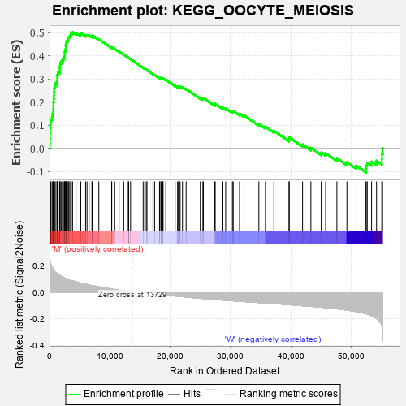
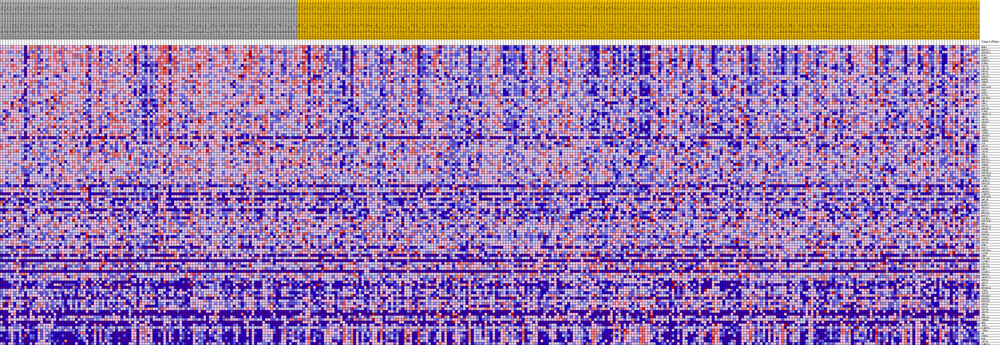
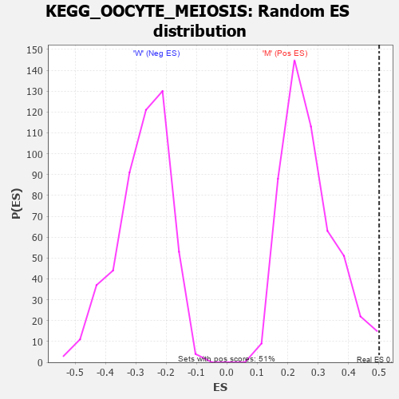

| Dataset | MUC16.MUC16.cls#M_versus_W.MUC16.cls#M_versus_W_repos |
| Phenotype | MUC16.cls#M_versus_W_repos |
| Upregulated in class | M |
| GeneSet | KEGG_OOCYTE_MEIOSIS |
| Enrichment Score (ES) | 0.5012971 |
| Normalized Enrichment Score (NES) | 1.850184 |
| Nominal p-value | 0.007905139 |
| FDR q-value | 0.04908281 |
| FWER p-Value | 0.22 |

| PROBE | DESCRIPTION (from dataset) | GENE SYMBOL | GENE_TITLE | RANK IN GENE LIST | RANK METRIC SCORE | RUNNING ES | CORE ENRICHMENT | |
|---|---|---|---|---|---|---|---|---|
| 1 | BUB1 | na | 70 | 0.241 | 0.0214 | Yes | ||
| 2 | MAD2L1 | na | 71 | 0.240 | 0.0440 | Yes | ||
| 3 | RPS6KA1 | na | 78 | 0.237 | 0.0662 | Yes | ||
| 4 | PLK1 | na | 98 | 0.232 | 0.0876 | Yes | ||
| 5 | CCNB2 | na | 143 | 0.221 | 0.1076 | Yes | ||
| 6 | PKMYT1 | na | 230 | 0.205 | 0.1254 | Yes | ||
| 7 | CCNB1 | na | 427 | 0.185 | 0.1392 | Yes | ||
| 8 | CDC23 | na | 542 | 0.177 | 0.1537 | Yes | ||
| 9 | CDC25C | na | 624 | 0.172 | 0.1684 | Yes | ||
| 10 | FBXO5 | na | 632 | 0.171 | 0.1843 | Yes | ||
| 11 | CDC20 | na | 652 | 0.169 | 0.1999 | Yes | ||
| 12 | PPP3CA | na | 722 | 0.165 | 0.2142 | Yes | ||
| 13 | MAPK1 | na | 734 | 0.165 | 0.2295 | Yes | ||
| 14 | YWHAE | na | 738 | 0.164 | 0.2449 | Yes | ||
| 15 | CDK2 | na | 744 | 0.164 | 0.2602 | Yes | ||
| 16 | PPP2R1B | na | 854 | 0.158 | 0.2730 | Yes | ||
| 17 | CDK1 | na | 1063 | 0.148 | 0.2831 | Yes | ||
| 18 | ESPL1 | na | 1256 | 0.140 | 0.2928 | Yes | ||
| 19 | PTTG1 | na | 1287 | 0.139 | 0.3053 | Yes | ||
| 20 | PPP2R5C | na | 1294 | 0.139 | 0.3182 | Yes | ||
| 21 | SMC1A | na | 1437 | 0.133 | 0.3281 | Yes | ||
| 22 | CHP1 | na | 1690 | 0.126 | 0.3354 | Yes | ||
| 23 | CDC27 | na | 1710 | 0.125 | 0.3468 | Yes | ||
| 24 | MAP2K1 | na | 1733 | 0.124 | 0.3581 | Yes | ||
| 25 | CCNE2 | na | 1747 | 0.124 | 0.3695 | Yes | ||
| 26 | ANAPC10 | na | 1974 | 0.117 | 0.3764 | Yes | ||
| 27 | SMC3 | na | 2148 | 0.113 | 0.3838 | Yes | ||
| 28 | ADCY3 | na | 2317 | 0.109 | 0.3911 | Yes | ||
| 29 | ANAPC1 | na | 2500 | 0.106 | 0.3977 | Yes | ||
| 30 | SGO1 | na | 2509 | 0.105 | 0.4075 | Yes | ||
| 31 | PRKX | na | 2534 | 0.105 | 0.4169 | Yes | ||
| 32 | AURKA | na | 2600 | 0.104 | 0.4254 | Yes | ||
| 33 | ITPR3 | na | 2696 | 0.102 | 0.4333 | Yes | ||
| 34 | ANAPC4 | na | 2702 | 0.102 | 0.4427 | Yes | ||
| 35 | SPDYC | na | 2754 | 0.101 | 0.4513 | Yes | ||
| 36 | YWHAQ | na | 2793 | 0.100 | 0.4600 | Yes | ||
| 37 | SLK | na | 2955 | 0.097 | 0.4662 | Yes | ||
| 38 | ADCY7 | na | 3090 | 0.095 | 0.4727 | Yes | ||
| 39 | CALM3 | na | 3186 | 0.093 | 0.4798 | Yes | ||
| 40 | ADCY6 | na | 3355 | 0.091 | 0.4853 | Yes | ||
| 41 | CUL1 | na | 3518 | 0.089 | 0.4907 | Yes | ||
| 42 | YWHAZ | na | 3612 | 0.087 | 0.4972 | Yes | ||
| 43 | PPP1CA | na | 3823 | 0.084 | 0.5013 | Yes | ||
| 44 | PPP1CC | na | 4388 | 0.077 | 0.4983 | No | ||
| 45 | YWHAG | na | 5089 | 0.068 | 0.4920 | No | ||
| 46 | PPP2CA | na | 5180 | 0.067 | 0.4967 | No | ||
| 47 | YWHAH | na | 5980 | 0.059 | 0.4877 | No | ||
| 48 | PPP2R1A | na | 6217 | 0.057 | 0.4888 | No | ||
| 49 | PPP2R5D | na | 6555 | 0.053 | 0.4876 | No | ||
| 50 | CAMK2D | na | 7028 | 0.049 | 0.4837 | No | ||
| 51 | ANAPC2 | na | 7084 | 0.048 | 0.4872 | No | ||
| 52 | PPP2CB | na | 8177 | 0.040 | 0.4712 | No | ||
| 53 | CCNE1 | na | 10294 | 0.022 | 0.4349 | No | ||
| 54 | ANAPC7 | na | 10318 | 0.022 | 0.4366 | No | ||
| 55 | ANAPC5 | na | 10803 | 0.019 | 0.4296 | No | ||
| 56 | CAMK2B | na | 11529 | 0.014 | 0.4178 | No | ||
| 57 | PPP2R5E | na | 12298 | 0.009 | 0.4047 | No | ||
| 58 | SMC1B | na | 13076 | 0.004 | 0.3910 | No | ||
| 59 | MAPK3 | na | 13096 | 0.004 | 0.3910 | No | ||
| 60 | MAPK12 | na | 13114 | 0.004 | 0.3910 | No | ||
| 61 | FBXW11 | na | 13438 | 0.002 | 0.3853 | No | ||
| 62 | ADCY1 | na | 15524 | -0.002 | 0.3477 | No | ||
| 63 | FBXO43 | na | 15788 | -0.004 | 0.3433 | No | ||
| 64 | MAD2L2 | na | 16036 | -0.005 | 0.3393 | No | ||
| 65 | CALML6 | na | 16160 | -0.006 | 0.3377 | No | ||
| 66 | PPP2R5B | na | 17153 | -0.011 | 0.3207 | No | ||
| 67 | RBX1 | na | 17422 | -0.013 | 0.3171 | No | ||
| 68 | RPS6KA3 | na | 18233 | -0.017 | 0.3040 | No | ||
| 69 | ANAPC13 | na | 18298 | -0.017 | 0.3044 | No | ||
| 70 | CALM1 | na | 18494 | -0.018 | 0.3026 | No | ||
| 71 | PPP3R1 | na | 18549 | -0.018 | 0.3033 | No | ||
| 72 | STAG3 | na | 18771 | -0.019 | 0.3011 | No | ||
| 73 | PPP3CC | na | 18833 | -0.020 | 0.3019 | No | ||
| 74 | CDC16 | na | 19279 | -0.022 | 0.2959 | No | ||
| 75 | BTRC | na | 20825 | -0.029 | 0.2706 | No | ||
| 76 | PLCZ1 | na | 21238 | -0.031 | 0.2660 | No | ||
| 77 | PPP2R5A | na | 21305 | -0.031 | 0.2677 | No | ||
| 78 | CALM2 | na | 21545 | -0.032 | 0.2664 | No | ||
| 79 | CHP2 | na | 21658 | -0.033 | 0.2675 | No | ||
| 80 | PPP1CB | na | 22043 | -0.034 | 0.2637 | No | ||
| 81 | CALML5 | na | 22650 | -0.037 | 0.2562 | No | ||
| 82 | CDC26 | na | 25003 | -0.046 | 0.2179 | No | ||
| 83 | PRKACB | na | 25430 | -0.048 | 0.2146 | No | ||
| 84 | SKP1 | na | 25518 | -0.048 | 0.2176 | No | ||
| 85 | CALML3 | na | 27409 | -0.055 | 0.1885 | No | ||
| 86 | PRKACA | na | 27466 | -0.055 | 0.1927 | No | ||
| 87 | ANAPC11 | na | 28744 | -0.060 | 0.1751 | No | ||
| 88 | SPDYA | na | 29205 | -0.061 | 0.1726 | No | ||
| 89 | ADCY2 | na | 30322 | -0.065 | 0.1584 | No | ||
| 90 | REC8 | na | 30462 | -0.065 | 0.1621 | No | ||
| 91 | RPS6KA6 | na | 31508 | -0.069 | 0.1496 | No | ||
| 92 | ITPR2 | na | 32250 | -0.071 | 0.1428 | No | ||
| 93 | IGF1R | na | 34711 | -0.079 | 0.1056 | No | ||
| 94 | RPS6KA2 | na | 35799 | -0.082 | 0.0936 | No | ||
| 95 | PPP3R2 | na | 37199 | -0.086 | 0.0764 | No | ||
| 96 | PPP3CB | na | 39713 | -0.095 | 0.0397 | No | ||
| 97 | ADCY4 | na | 39739 | -0.095 | 0.0482 | No | ||
| 98 | PTTG2 | na | 41955 | -0.102 | 0.0176 | No | ||
| 99 | ADCY9 | na | 43334 | -0.107 | 0.0027 | No | ||
| 100 | ADCY8 | na | 45052 | -0.114 | -0.0177 | No | ||
| 101 | INS | na | 45785 | -0.117 | -0.0200 | No | ||
| 102 | PRKACG | na | 47650 | -0.126 | -0.0420 | No | ||
| 103 | YWHAB | na | 49310 | -0.135 | -0.0594 | No | ||
| 104 | MOS | na | 50832 | -0.146 | -0.0732 | No | ||
| 105 | IGF1 | na | 52481 | -0.163 | -0.0878 | No | ||
| 106 | CAMK2G | na | 52501 | -0.163 | -0.0729 | No | ||
| 107 | ITPR1 | na | 52681 | -0.165 | -0.0606 | No | ||
| 108 | AR | na | 53398 | -0.177 | -0.0569 | No | ||
| 109 | CPEB1 | na | 54223 | -0.198 | -0.0532 | No | ||
| 110 | PGR | na | 55110 | -0.248 | -0.0460 | No | ||
| 111 | ADCY5 | na | 55113 | -0.248 | -0.0227 | No | ||
| 112 | CAMK2A | na | 55224 | -0.271 | 0.0008 | No |

